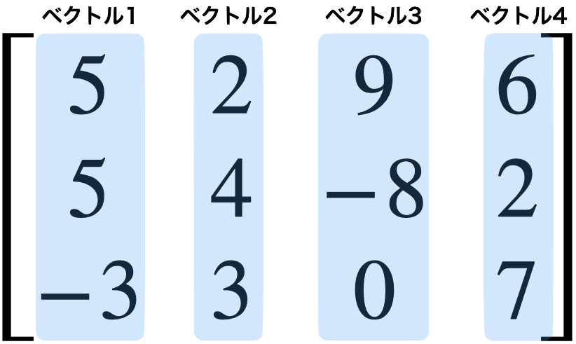
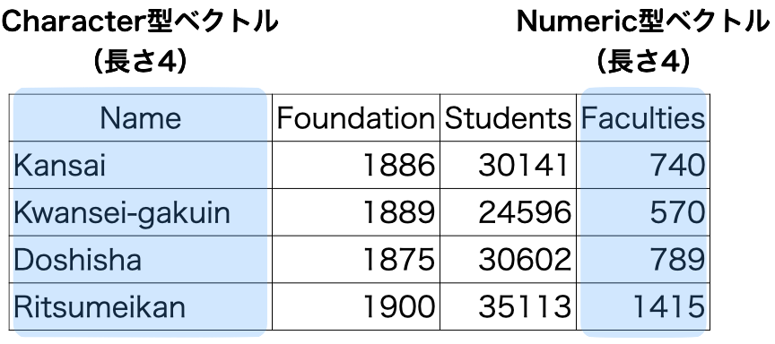
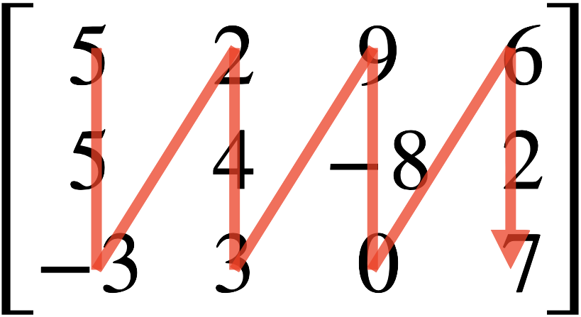
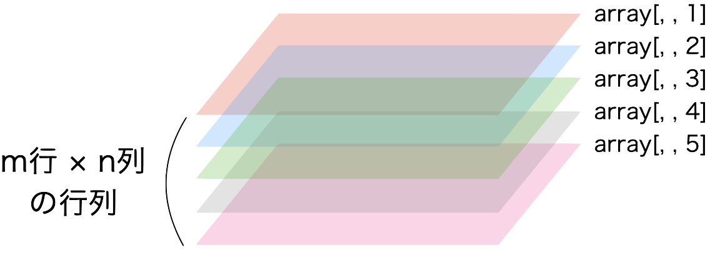

[1] "R is fun!"第8回講義資料
データ構造
スライド
データ構造とは
Rにおけるデータの最小単位はベクトルである1。そして、これらのベクトルが集合として行列や表などが出来上がる。ベクトルの集合の在り方をRではデータ構造 (data structure)と呼ぶ。
たとえば、同じ長さのnumeric型（数値型）、またはcomplex型（複素数型）の縦ベクトルが横に並んでいる構造（図 1）をRではmatrix構造（行列構造）と呼ぶ。Matrix構造の場合「同じ長さ、かつnumeric/complex型の縦ベクトル」の集合と言えよう。データ型の制約のない「同じ長さの縦ベクトル」の集合はRでdata.frame構造（データフレーム構造）と呼ばれる。また、data.frame構造は各列には名前が付くといった特徴がある。


本講義で使うデータ構造は主にベクトル (vector) とデータ・フレーム (data.frame) とその拡張版のティブル (tibble) のみであるため、行列 (matrix) 、配列 (array) 、リスト (array) の説明は割愛する。
ベクトル
ベクトル構造は同じデータ型が一つ以上格納されているオブジェクトであり、これまで何回も登場したデータ構造である。ベクトルはRにおけるデータの最小単位である。Rには数百、数千種類のデータ構造が存在するが、これら全てのデータ構造の最小単位はベクトルである。
ベクトルを作成する際、注意しないといけないことは一つのベクトル内の全ての要素は同じデータ型である点である。もし、複数のデータ型が混在している場合、優先順位の高いデータ型へ強制的に変換される。頻繁に使われるデータ型の場合、優先順位はcharacter型 > numeric型 > logical型であり、character型の優先順位が最も高い。
たとえば、character型とnumeric型の要素が混在したベクトルを考えてみよう。my_vec3は長さ6のベクトルであるが、2つのデータ型が混在しているため、character型が優先される。
Numeric型とlogical型が混在している場合、logical型の要素はnumeric型へ変換される。変換される際、TRUEは1、FALSEは0に変換される。
Character型とlogical型が混在している場合、logical型の要素はcharacter型へ変換される。変換される際、TRUEは"TRUE"、FALSEは"FALSE"に変換される。
その他、ベクトルの操作（演算、要素の抽出など）についてはこれまでの講義資料を参照すること。
行列
行列構造とはnumeric型、またはcomplex型の縦ベクトルを横に並べたデータ構造である。以下のmy_mat1は3行4列（3 \(\times\) 4）の行列である。
[,1] [,2] [,3] [,4]
[1,] 1 4 7 10
[2,] 2 5 8 11
[3,] 3 6 9 12 このmy_mat1は長さ3のnumeric型縦ベクトルが4つ並んでいる。4つの縦ベクトルとはc(1, 2, 3)、c(4, 5, 6)、c(7, 8, 9)、c(10, 11, 12)である。他にも長さ4のnumeric型横ベクトルが3つ（c(1, 4, 7, 10)、c(2, 5, 8, 11)、c(3, 6, 9, 12)）積まれているとも読めるが、データ分析では一般的に縦ベクトルの集合として行列を捉える。
行列の作成
行列を作成する際はmatrix()関数を使用する。第1引数としてnumericまたはcomplex型ベクトル、nrow引数で行列の行数を指定する。たとえば、以下のような行列を作成し、my_mat2という名のオブジェクトとして作業環境内に格納するとしよう。
\[ \begin{bmatrix} 5 & 2 & 9 & 6 \\ 5 & 4 & -8 & 2 \\ -3 & 3 & 0 & 7 \end{bmatrix} \]
[,1] [,2] [,3] [,4]
[1,] 5 2 9 6
[2,] 5 4 -8 2
[3,] -3 3 0 7第1引数はベクトルはベクトル構造のオブジェクトであるため、予めベクトルを作成し、ベクトル名を入れることも可能である。
Code 11
[,1] [,2] [,3] [,4]
[1,] 5 2 9 6
[2,] 5 4 -8 2
[3,] -3 3 0 7ここで注意すべき点は要素が入る順番である。我々は通常「左から右へ」、「上から下へ」文字列を読むが、行列はその逆、つまり「上から下へ」、「左から右へ」の順番となる（図 3）。行列が「縦ベクトルの集合」ということを意識すれば、予め混乱は避けられるだろう。

行列の操作
行列構造のデータは本講義では使用しないため、説明は割愛し、ここでは行列の確認と要素の抽出するコードのみ紹介する。
行列の演算
行列構造のデータは本講義では使用しないため、説明は割愛するが、これらは線形代数を勉強する人には便利な演算子である。
| 演算子/関数 | 説明 |
|---|---|
+ |
行列の足し算 |
- |
行列の引き算 |
%*% |
行列の掛け算 |
/ |
行列の割り算 |
* |
行列のアダマール積 (Hadamard product) |
t(オブジェクト名) |
行列の転置 |
qr(オブジェクト名)$rank |
行列の階数 |
solve(オブジェクト名) |
逆行列 |
eigen(オブジェクト名) |
行列の固有値 |
solve()とeigen()は正方行列 (\(n \times n\)の行列)でないと使えないことに注意しよう。
配列
行列と似たようなデータ構造として、配列（array）構造がある。これは同じ大きさ行列を重ねたものであり（図 4）、行列は層 (layer) が1つのみの配列である。つまり、行列構造は配列構造の一種であり、実際、class()で行列構造のデータ構造を確認すると"matrix"だけでなく、"array"も同時に出力される。2次元である行列を重ねたものであるため、配列構造は3次元のデータ構造であり、要素抽出の際、[x, y, z]で指定する必要がある（3番目のzが配列の層 (layer)を意味する）。

データ・フレーム
データ・フレーム構造（data.frame）は行列構造と同様、縦ベクトルを横に並べたものである。しかし、以下の2点が異なる。
- データ・フレーム構造の場合、すべてのベクトルが同じデータ型である必要がない。
- 図 5 の場合、character型（1列目）とnumeric型（2、3、4列目）ベクトルが混在している。
- データ・フレーム構造の場合、各列に名前が付いている。
- 図 5 の場合、Name、Foundation、Students、Facultiesが列名である。
データ・フレーム構造は我々が頻繁に接する表形式データ、そのものである。前期・後期の講義全体を通じて最も頻繁に扱うこととなるデータ構造であるため、非常に重要なデータ構造である。詳しい操作方法は次回以降（データ・ハンドリング）の講義で解説するが、ここでは作成方法、確認方法、簡単な抽出方法について解説する。
データ・フレームの作成
データ・フレームを作成する方法は大きく分けて2通りある。小さい表であれば（1）自分で作成することも可能だが、ある程度の規模のあるデータならダウンロードしたデータや表計算ソフト（Excel、Numbers、LibreOffice Calcなど）で作成した表を（2）読み込むこともできる。
まずは、直接データ・フレームを作成する方法から紹介する。データ・フレームの作成にはdata.frame()、またはtibble()関数を使用する。data.frame()はR内蔵関数であるが、tibble()関数は使用する前に予め{tidyverse}パッケージを読み込んでおく必要がある。data.frame()とtibble()は厳密には異なるデータ構造であるが、tibble()で作成した表がより汎用性が高いため、ここではtibble()関数を使用したデータ・フレームの作成する方法を紹介する。
まず、{tidyverse}パッケージを読み込む。
ここでは以下のような表を作成する。
| Name | Foundation | Students |
|---|---|---|
| Kansai | 1886 | 27736 |
| Kangaku | 1889 | 23671 |
| Doshisha | 1875 | 25974 |
| Ritsumeikan | 1900 | 32467 |
この表は3つの縦ベクトルの集合であり、それぞれの名前はName、Foundation、Studentsである。tibble()関数内に列名 = 縦ベクトルを入れるだけである。作成したデータ・フレームをmy_df1という名のオブジェクトとして格納し、その中身を確認してみよう。
Code 20
# A tibble: 4 × 3
Name Foundation Students
<chr> <dbl> <dbl>
1 Kansai 1886 27736
2 Kangaku 1889 23671
3 Doshisha 1875 25974
4 Ritsumeikan 1900 32467データ・フレーム構造はベクトルの集合であるため、ベクトルから作成することも出来る。以下のような表を作成するとする。
| Name | Pop | Area | Food |
|---|---|---|---|
| Tokyo | 1396 | 2194 | Monja |
| Nagoya | 755 | 5173 | Tebasaki |
| Osaka | 882 | 1899 | Takoyaki |
| Fukuoka | 511 | 4987 | Ramen |
今回はそれぞれの列に外とするベクトルを予め作成し、そのベクトルをtibble()関数の引数として使用する。作成したオブジェクトはmy_df2と名付けよう。
Code 21
# A tibble: 4 × 4
Name Pop Area Food
<chr> <dbl> <dbl> <chr>
1 Tokyo 1396 2194 Monja
2 Nagoya 755 5173 Tebasaki
3 Osaka 882 1899 Takoyaki
4 Fukuoka 511 4987 Ramen 以上のような数行 \(\times\) 数列の表なら手打ちで作成することもできるが、数百〜数万人のデータなどを手打ちで作成することはほぼ不可能であろう。この場合、予め表計算ソフトを使って表を作成しておくか、既に公開されている表形式データを使うこととなる。別途のファイルとして保存されている表形式ファイル（.csvファイル）の読み込みにはread_csv()関数を使う2。read_csv()は{tidyverse}パッケージを読み込んでおかないと使えないため、予め読んでおこう。今回は既に読み込み済みであるため不要である。
第6回の講義で作成したデータ（BuildingData.csv）がプロジェクト・フォルダー内のDataフォルダー内に保存されている場合、以下のように読み込む。読み込んだデータを使うためには作業環境内にオブジェクトとして格納しておく必要があり、今回はmy_df3と名付ける。
データ・フレームの確認
作業環境に格納されたデータ・フレームを出力する場合はオブジェクト名を入力する。データが画面に収まらない場合は一部の列が省略される場合があり、出力される行数はデフォルト設定では10行である。以下でも最初の10行しか出力されているが、出力画面の1行目の情報（# A tibble: 47 × 5）から全47行のデータであることが分かる。
# A tibble: 47 × 5
ID Pref Finance Over65 Turnout
<dbl> <chr> <dbl> <dbl> <dbl>
1 1 北海道 0.462 32.3 58.8
2 2 青森県 0.358 33.7 52.9
3 3 岩手県 0.372 33.8 60.4
4 4 宮城県 0.626 28.4 55.9
5 5 秋田県 0.322 37.6 58.2
6 6 山形県 0.379 34.0 64.3
7 7 福島県 0.545 31.8 58.0
8 8 茨城県 0.656 30.3 52.5
9 9 栃木県 0.648 29.6 53.1
10 10 群馬県 0.638 30.9 53.9
# ℹ 37 more rows 全ての行を出力するためにはprint()関数を使用し、n = Infを指定する。ちなみにn = 20にすると、最初の20行が出力される。
# A tibble: 47 × 5
ID Pref Finance Over65 Turnout
<dbl> <chr> <dbl> <dbl> <dbl>
1 1 北海道 0.462 32.3 58.8
2 2 青森県 0.358 33.7 52.9
3 3 岩手県 0.372 33.8 60.4
4 4 宮城県 0.626 28.4 55.9
5 5 秋田県 0.322 37.6 58.2
6 6 山形県 0.379 34.0 64.3
7 7 福島県 0.545 31.8 58.0
8 8 茨城県 0.656 30.3 52.5
9 9 栃木県 0.648 29.6 53.1
10 10 群馬県 0.638 30.9 53.9
11 11 埼玉県 0.770 27.3 54.0
12 12 千葉県 0.778 28.0 53.6
13 13 東京都 1.15 23.3 57.2
14 14 神奈川県 0.889 25.9 56.3
15 15 新潟県 0.475 33.0 63.2
16 16 富山県 0.485 32.9 55.7
17 17 石川県 0.518 30.2 57.1
18 18 福井県 0.421 31.1 57.8
19 19 山梨県 0.409 31.1 60.6
20 20 長野県 0.528 32.3 59.8
21 21 岐阜県 0.559 31.1 58.1
22 22 静岡県 0.726 30.7 54.8
23 23 愛知県 0.912 25.8 56.0
24 24 三重県 0.609 30.6 56.2
25 25 滋賀県 0.576 26.7 57.3
26 26 京都府 0.595 29.5 56.3
27 27 大阪府 0.792 27.7 56.2
28 28 兵庫県 0.649 29.3 54.3
29 29 奈良県 0.437 31.7 59.1
30 30 和歌山県 0.338 33.4 58.2
31 31 鳥取県 0.287 32.5 58.2
32 32 島根県 0.266 34.7 61.6
33 33 岡山県 0.535 30.7 50.9
34 34 広島県 0.618 29.8 52.1
35 35 山口県 0.457 34.8 49.7
36 36 徳島県 0.327 34.3 53.9
37 37 香川県 0.487 32.1 56.1
38 38 愛媛県 0.448 33.4 55.0
39 39 高知県 0.274 35.6 57.3
40 40 福岡県 0.658 28.2 52.1
41 41 佐賀県 0.356 30.9 58.5
42 42 長崎県 0.348 33.2 56.9
43 43 熊本県 0.427 31.7 56.4
44 44 大分県 0.395 33.5 57.3
45 45 宮崎県 0.358 32.9 53.7
46 46 鹿児島県 0.353 32.7 57.7
47 47 沖縄県 0.375 22.7 54.9 データの最初のx行を出力するにはprint()関数とn引数の組み合わせでも出来るが、他にもhead()関数がある。これは最初の6行のみ出力してくれる関数である。
# A tibble: 6 × 5
ID Pref Finance Over65 Turnout
<dbl> <chr> <dbl> <dbl> <dbl>
1 1 北海道 0.462 32.3 58.8
2 2 青森県 0.358 33.7 52.9
3 3 岩手県 0.372 33.8 60.4
4 4 宮城県 0.626 28.4 55.9
5 5 秋田県 0.322 37.6 58.2
6 6 山形県 0.379 34.0 64.3 head()関数はprint()関数同様、n引数で出力行数を変えることが出来る。
# A tibble: 10 × 5
ID Pref Finance Over65 Turnout
<dbl> <chr> <dbl> <dbl> <dbl>
1 1 北海道 0.462 32.3 58.8
2 2 青森県 0.358 33.7 52.9
3 3 岩手県 0.372 33.8 60.4
4 4 宮城県 0.626 28.4 55.9
5 5 秋田県 0.322 37.6 58.2
6 6 山形県 0.379 34.0 64.3
7 7 福島県 0.545 31.8 58.0
8 8 茨城県 0.656 30.3 52.5
9 9 栃木県 0.648 29.6 53.1
10 10 群馬県 0.638 30.9 53.9 head()関数の友達としてtail()関数がある。これは最後の6行を出力をしてくれる関数である。
# A tibble: 6 × 5
ID Pref Finance Over65 Turnout
<dbl> <chr> <dbl> <dbl> <dbl>
1 42 長崎県 0.348 33.2 56.9
2 43 熊本県 0.427 31.7 56.4
3 44 大分県 0.395 33.5 57.3
4 45 宮崎県 0.358 32.9 53.7
5 46 鹿児島県 0.353 32.7 57.7
6 47 沖縄県 0.375 22.7 54.9 むろん、head()関数同様、n引数で出力行数を変えることが出来る。
# A tibble: 3 × 5
ID Pref Finance Over65 Turnout
<dbl> <chr> <dbl> <dbl> <dbl>
1 45 宮崎県 0.358 32.9 53.7
2 46 鹿児島県 0.353 32.7 57.7
3 47 沖縄県 0.375 22.7 54.9 もう一つ便利な関数はデータの中身を一切出力せず、列名（変数名）のみを出力してくれるnames()関数である。結果としてcharacter型ベクトルが返される。
my_df3のデータ構造はデータ・フレームであるが、これはclass()関数で確認できる。詳細は割愛するがオブジェクトは複数のクラスを持つことが許容されており、my_df3の場合は4つのクラスの中に"data.frame"が含まれているため、データ・フレーム構造であることが分かる。
実際、あるオブジェクトがデータ・フレームかどうかを判定するis.data.frame()関数を使うと、my_df3がデータ・フレームであることが分かる。
他にもデータ・フレームの特徴を調べる関数としてデータ・フレームの大きさを計算する関数がある。データ・フレームの大きさとは行数と列数を意味し、それぞれnrow()とncol()関数で計算することができる。
dim()関数を使えば行数と列数を同時に出力され、長さ2のnumeric型ベクトルが返される。
行の抽出
ベクトルは1次元であるに対し、データ・フレームは行と列といった2次元構造であるため、行・列を抽出するためには行、列をそれぞれ指定する必要がある。ベクトルと同様、オブジェクト名の後ろに[]を付けることは変わらないが、データ・フレームは2次元構造であるため、[行, 列]で指定する必要がある。
たとえば、my_df3の27行目を抽出するためにはmy_df3[27, ]と入力する。列の指定がされていない場合は全ての列が抽出される。
# A tibble: 1 × 5
ID Pref Finance Over65 Turnout
<dbl> <chr> <dbl> <dbl> <dbl>
1 27 大阪府 0.792 27.7 56.2抽出された行のデータ構造はデータ・フレームである。
行の位置を長さ2以上のベクトルにすることで、複数行の抽出もできる。c()関数や:演算子が使用可能である。以下の例はmy_df3から13、27、40行目を抽出するコードである。
# A tibble: 3 × 5
ID Pref Finance Over65 Turnout
<dbl> <chr> <dbl> <dbl> <dbl>
1 13 東京都 1.15 23.3 57.2
2 27 大阪府 0.792 27.7 56.2
3 40 福岡県 0.658 28.2 52.1抽出された行のデータ構造はデータ・フレームである。
列の抽出
列の抽出も行の抽出方法と同じである。たとえば、my_df3の2列目を抽出したい場合は以下のように入力する。
# A tibble: 47 × 1
Pref
<chr>
1 北海道
2 青森県
3 岩手県
4 宮城県
5 秋田県
6 山形県
7 福島県
8 茨城県
9 栃木県
10 群馬県
# ℹ 37 more rows抽出された列のデータ構造はデータ・フレームである。
c()や:演算子を使うことで複数列の抽出も可能であり、抽出後のデータ構造もデータ・フレームである。
# A tibble: 47 × 3
Pref Over65 Turnout
<chr> <dbl> <dbl>
1 北海道 32.3 58.8
2 青森県 33.7 52.9
3 岩手県 33.8 60.4
4 宮城県 28.4 55.9
5 秋田県 37.6 58.2
6 山形県 34.0 64.3
7 福島県 31.8 58.0
8 茨城県 30.3 52.5
9 栃木県 29.6 53.1
10 群馬県 30.9 53.9
# ℹ 37 more rows[1] "tbl_df" "tbl" "data.frame" 列抽出の場合、[]以外にも$を使うこともできる。[]は抽出する行・列の位置を指定するが、$を使う場合は列名を指定する。たとえば、my_df3のPref列を抽出する場合は以下のように入力する。この場合は複数列の抽出はできないことに注意すること。
[1] "北海道" "青森県" "岩手県" "宮城県" "秋田県" "山形県"
[7] "福島県" "茨城県" "栃木県" "群馬県" "埼玉県" "千葉県"
[13] "東京都" "神奈川県" "新潟県" "富山県" "石川県" "福井県"
[19] "山梨県" "長野県" "岐阜県" "静岡県" "愛知県" "三重県"
[25] "滋賀県" "京都府" "大阪府" "兵庫県" "奈良県" "和歌山県"
[31] "鳥取県" "島根県" "岡山県" "広島県" "山口県" "徳島県"
[37] "香川県" "愛媛県" "高知県" "福岡県" "佐賀県" "長崎県"
[43] "熊本県" "大分県" "宮崎県" "鹿児島県" "沖縄県" もう一つ注意すべき点としては$で抽出された列はデータ・フレームでなく、ベクトルである点だ。実際、my_df3$Prefのデータ構造を調べてみると、character型と出力される。データ構造がベクトルの場合はデータ型が出力される。
is.vector()関数でmy_df3$Prefがベクトルかどうかを調べることもできる。
このように、抽出方法によって返り値のデータ構造が異なる。要約すると、（1）[]を用いた抽出は返り値がデータ・フレームであり、（2）$を用いた抽出は返り値がベクトルである点だ。
| コード | 意味 | 返り値 | 備考 |
|---|---|---|---|
データ・フレーム名[i, ] |
i番目の行を抽出 |
データ・フレーム | iは任意のベクトル |
データ・フレーム名[, i] |
i番目の列を抽出 |
データ・フレーム | iは任意のベクトル |
データ・フレーム名$列名 |
当該列を抽出 | ベクトル |
リスト
最後に紹介するリスト構造はあらゆるデータ構造が格納できるデータ構造である。つまり、様々なデータ構造のオブジェクトが一つのオブジェクトとしてまとまったものであえる3。実は、Rに存在する多くのオブジェクトはリストである。したがって、Rでデータを自由自在に操るためにはリストの知識が必須である。ただし、本講義（後期を含む）ではリストは使わないため、詳細な説明は省略する。
リスト構造オブジェクトを作成する場合はlist()関数を使用し、中には格納するオブジェクト名を入力する。それぞれのオブジェクトに名前を付ける場合は名前 = オブジェクト名と入力する。ここではこれまで作成してきたmy_vec1、my_vec4、my_mat1、my_df1をまとめたmy_listを作成し、それぞれVector1、Vector2、Matrix、DFと名付ける。
Code 45
$Vector1
[1] "R is fun!"
$Vector2
[1] 10 20 1 0
$Matrix
[,1] [,2] [,3] [,4]
[1,] 1 4 7 10
[2,] 2 5 8 11
[3,] 3 6 9 12
$DF
# A tibble: 4 × 3
Name Foundation Students
<chr> <dbl> <dbl>
1 Kansai 1886 27736
2 Kangaku 1889 23671
3 Doshisha 1875 25974
4 Ritsumeikan 1900 32467 class()関数でmy_listのデータ構造を確認してみるとリスト構造であることが分かる。
また、length()関数を使えば、当該オブジェクト内にいくつのオブジェクトが入っているかが分かる。
リスト構造のオブジェクトから任意の要素（オブジェクト）を抽出する場合は[]でなく、[[]]を使用する。リスト名[[i]]の場合、リストのi番目要素が抽出される。
もし、各オブジェクトに名前が付いている場合は[[]]内に位置でなく、要素名で抽出することもできる。my_list内のDFと名付けられた要素を抽出するためには以下のように入力する。要素名は"で囲む必要がある。
# A tibble: 4 × 3
Name Foundation Students
<chr> <dbl> <dbl>
1 Kansai 1886 27736
2 Kangaku 1889 23671
3 Doshisha 1875 25974
4 Ritsumeikan 1900 32467 また、データフレームの列抽出のように、$を使うこともできる。ただし、当該要素に名前が付いてある必要があり、要素名は"で囲む必要がない。以下のコードはmy_listからMatrixと名付けられた要素を抽出するコードである。
教科書
- 『私たちのR: ベストプラクティスの探求』第9章: データ構造